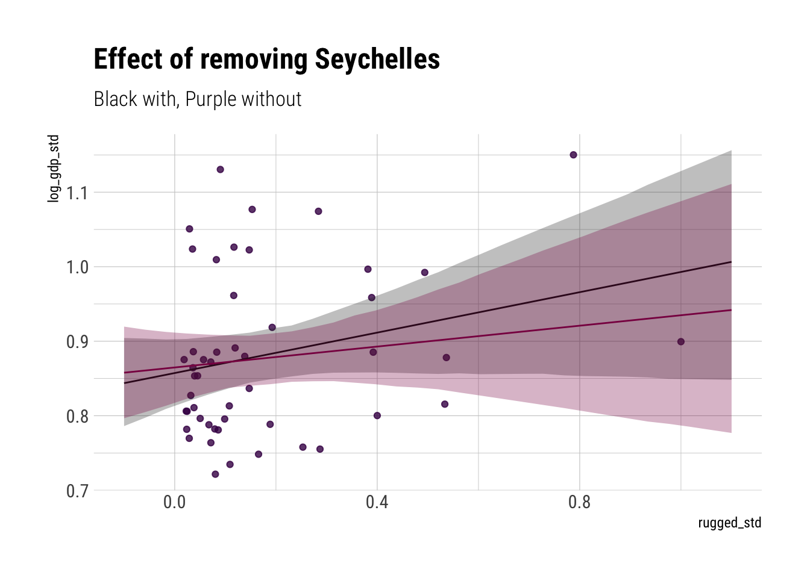
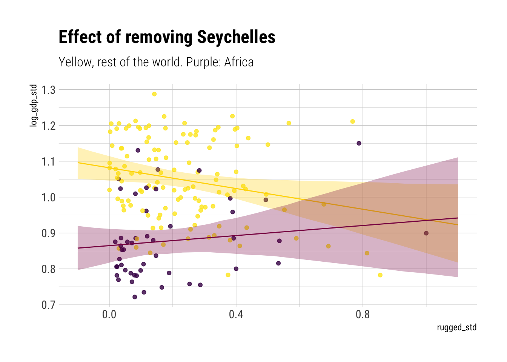
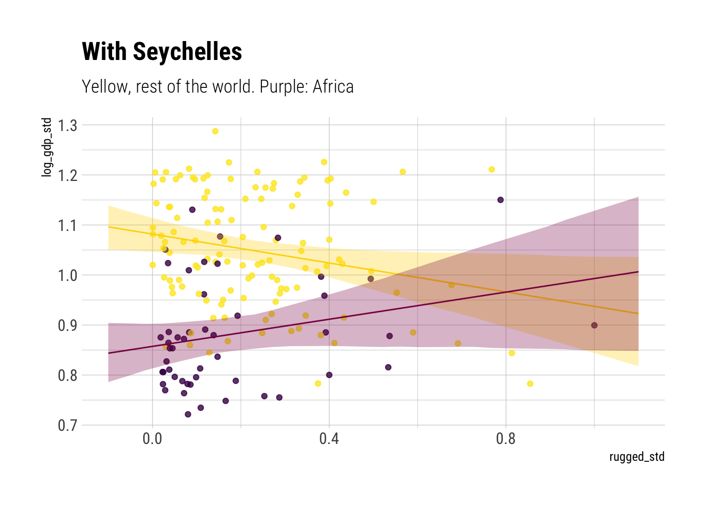
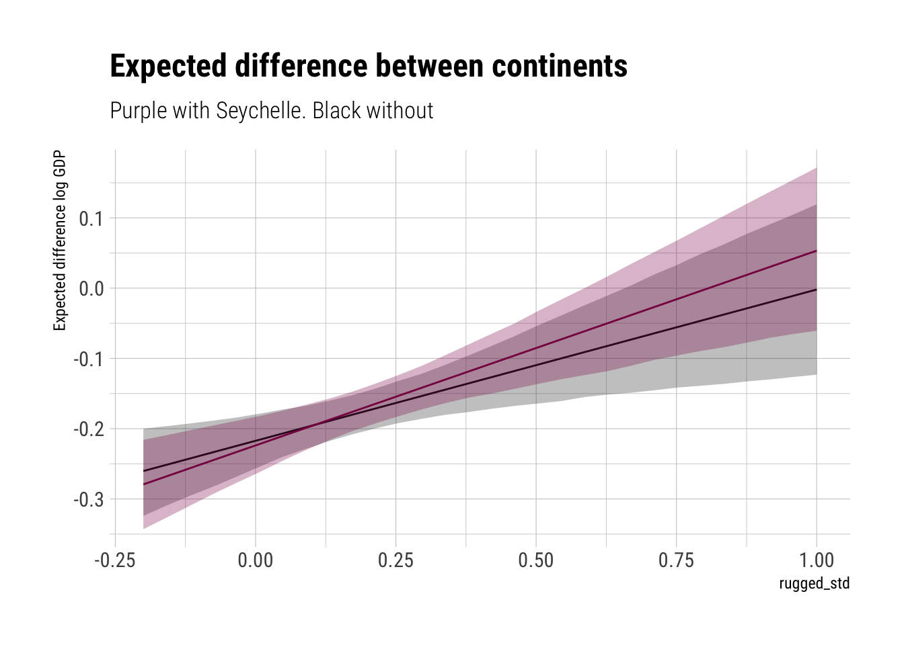
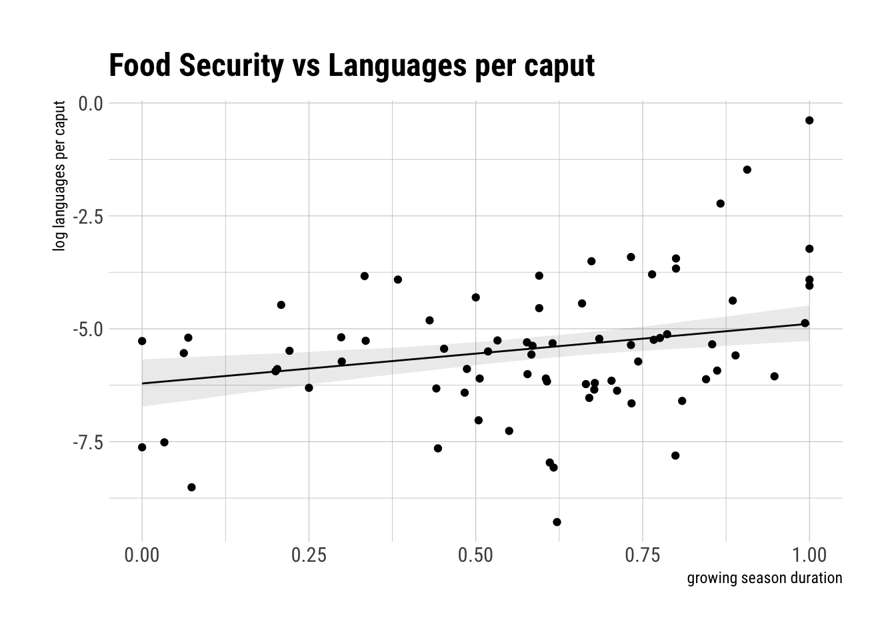
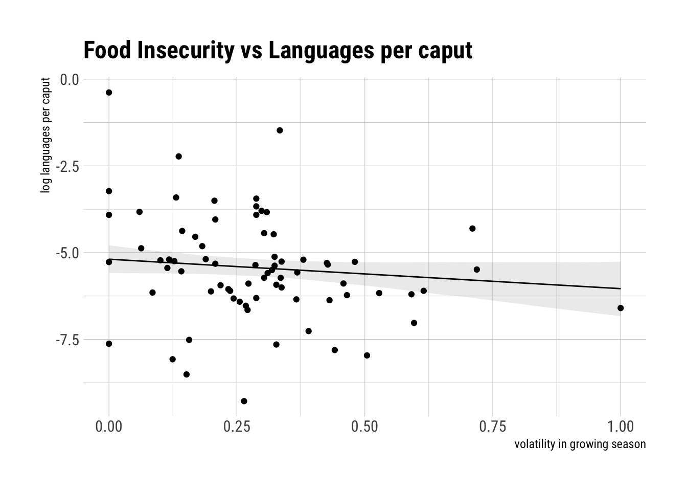

mean sd 5.5% 94.5%
a[1] 0.1216469 0.03061961 0.07271085 0.17058296
a[2] 0.1782907 0.02439658 0.13930026 0.21728116
a[3] 0.2406134 0.03059111 0.19172287 0.28950387
bw 0.2072015 0.02671180 0.16451091 0.24989215
bs -0.1725240 0.03737034 -0.23224906 -0.11279901
bws -0.1436491 0.03261954 -0.19578146 -0.09151679
sigma 0.1139477 0.01548856 0.08919395 0.13870138Statisical Rethinking: Week 5 -> Interactions
As Richard says in class, interactions are easy to code but incredibly difficult to interpret. By going through the problems in Chapter 8, I hope to gain a bit of practice working with them.
Chapter 8 Problems
Problem 1
Let’s run the tulips model but this time with the bed variable. Given that this is a categorical variable, it will create a different intercept for each of the beds in the sample.
Our model is swayed by the different intercepts given to each bed, as they seem to capture valuable variation. Now, let’s compare it with a model that omits bed.
WAIC SE dWAIC dSE pWAIC weight
model_wo_bed -22.60634 10.046650 0.000000 NA 6.291139 0.7254267
model_bed -20.66326 9.993276 1.943084 5.996111 9.575747 0.2745733Most of the weight seems to go the model with bed. However, given the lack of data, there’s too much uncertainty around the difference in WAIC between the 2 models.
Problem 2
mean sd 5.5% 94.5%
a[1] 0.8865695 0.015675627 0.86151687 0.91162223
a[2] 1.0505715 0.009936555 1.03469096 1.06645202
b[1] 0.1325113 0.074204079 0.01391882 0.25110372
b[2] -0.1425710 0.054749136 -0.23007065 -0.05507126
sigma 0.1094936 0.005935223 0.10000792 0.11897919 mean sd 5.5% 94.5%
a[1] 0.87962099 0.015965119 0.85410565 0.9051363
a[2] 1.05057837 0.009858793 1.03482212 1.0663346
b[1] 0.06787769 0.081004059 -0.06158244 0.1973378
b[2] -0.14265391 0.054330616 -0.22948473 -0.0558231
sigma 0.10862806 0.005905093 0.09919058 0.1180655As expected, the slope for the african countries decreased. Where its 89% PI went from (0.01, 0.25) to (-0.06, 0.2). Whereas the rest of the parameters are unchanged, as expected. Were we fitting a multi-level model, the slope for non african countries would have also possibly changed.
Let’s plot what this means:

Now let’s add europe into the mix for the model without Seychelles:

Whereas before

Although the model has lost confidence in the relationship between rugedness and log(gdp) for african countries for high levels of ruggedness, the model still allows us to be confident of a positive relationship between ruggedness and log(gdp) at lower levels. We can see this more clearly with the following plots where we analyze the expected difference between countries at different levels of ruggeddness:

Dropping Seychelle shrinks the expected difference between continents at all levels of ruggedness; however, the effect is stronger at the largest levels of ruggeddness.
Problem 3: Language Diversity
Is language diversity a product of food security?
mean sd 5.5% 94.5%
a -3.6241843 0.93057731 -5.1114266 -2.13694206
growing 1.3256627 0.53695659 0.4675024 2.18382305
c -0.1410468 0.07128679 -0.2549769 -0.02711674
sigma 1.3846357 0.11311750 1.2038521 1.56541928
It seems that the effect of growing seasons length, adjusting for area, is positive. The higher the mean growing season, the larger the log of languages per caput.
mean sd 5.5% 94.5%
a -3.4989509 0.94653229 -5.0116924 -1.98620953
sdgrowing -0.8468873 0.69645186 -1.9599519 0.26617726
c -0.1493849 0.07265783 -0.2655061 -0.03326362
sigma 1.4337800 0.11691787 1.2469227 1.62063737
It also seems that the standard deviation has a negative effect on the logarithm of the languages per caput. However, this effect has a higher level of uncertainty associated to it.
Now, let’s consider the interaction between the volatility in growing season and the mean duration of the growing season.
mean sd 5.5% 94.5%
a -3.919031711 0.94832455 -5.4346375 -2.403425917
growing 1.380821711 0.53151914 0.5313515 2.230291955
sdgrowing -0.980589705 0.68086964 -2.0687509 0.107571483
c -0.117471256 0.07280641 -0.2338300 -0.001112548
interaction -0.007921323 0.09996142 -0.1676790 0.151836327
sigma 1.357910739 0.11154742 1.1796364 1.536185063 WAIC SE dWAIC dSE pWAIC weight
model_three 265.2903 16.57336 0.000000 NA 4.477261 0.70292510
model_one 267.2050 16.28920 1.914699 1.984100 4.002462 0.26985934
model_two 271.7932 17.04332 6.502923 3.777558 3.826063 0.02721556The leading variable seems to be mean growing season. As the model that considers it alone seems to capture all importation variation and its predictions are basically equivalent to those of the model that considers all terms (model3).